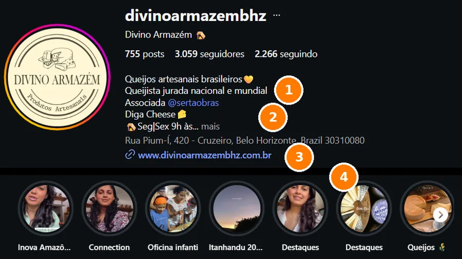
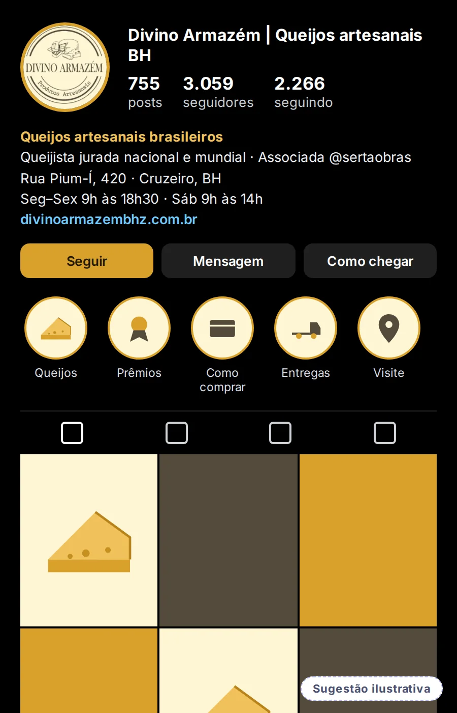
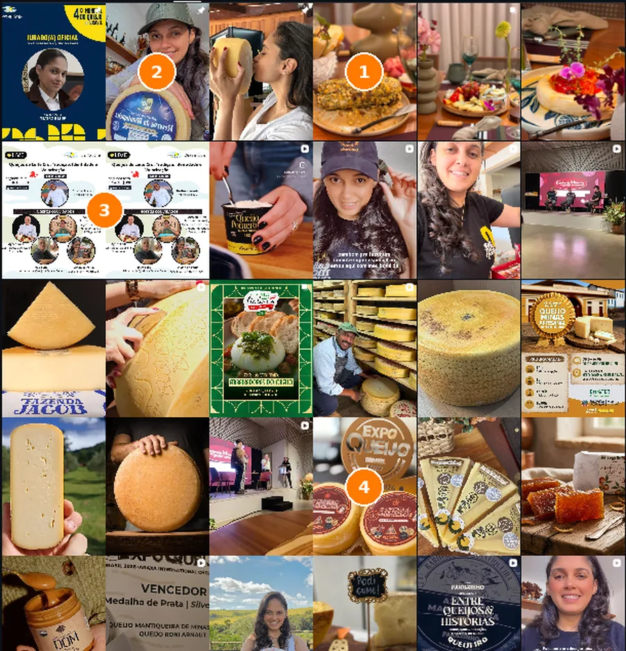
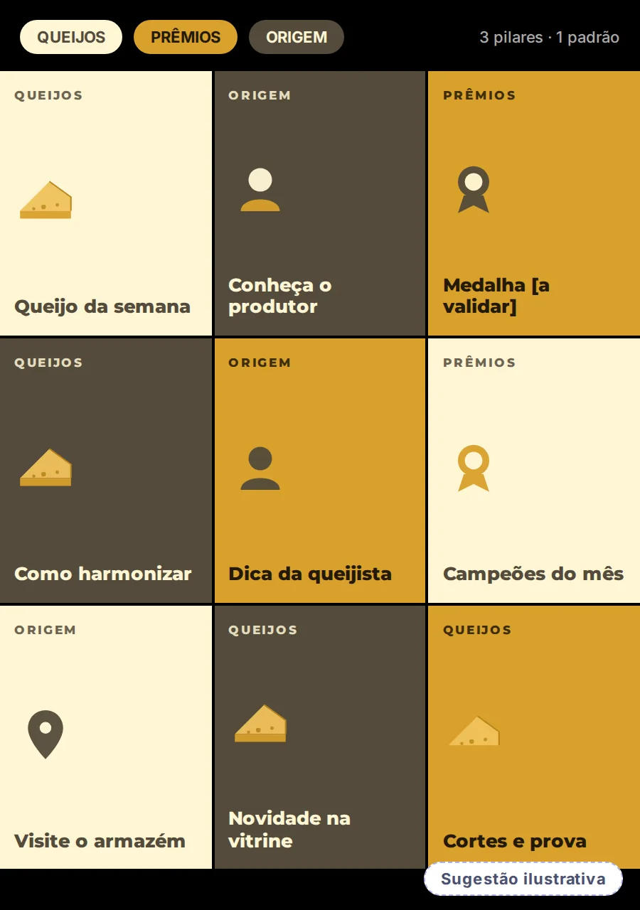
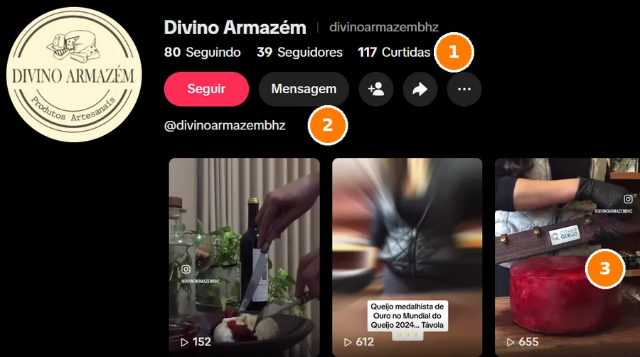
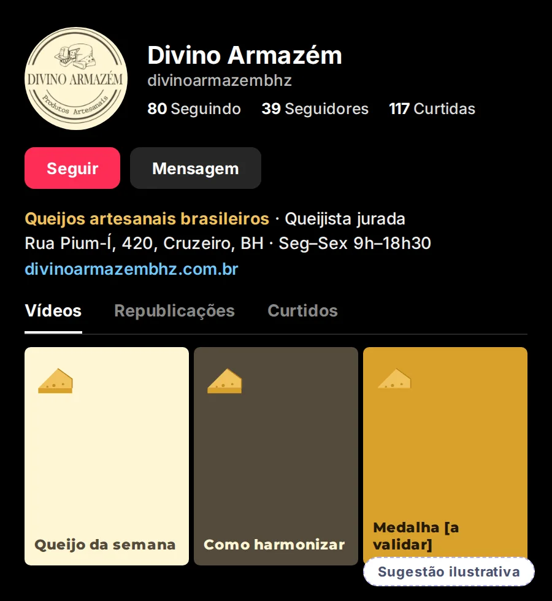
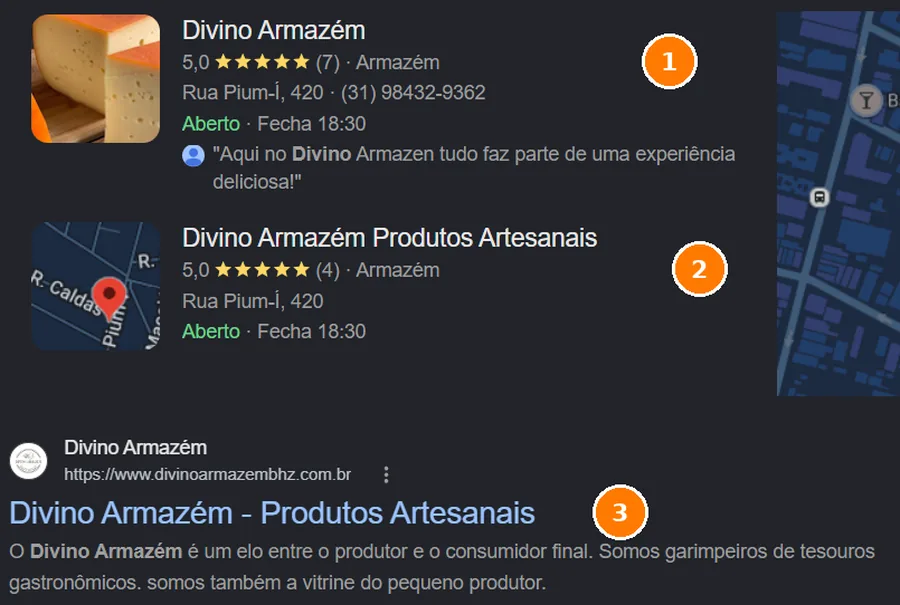
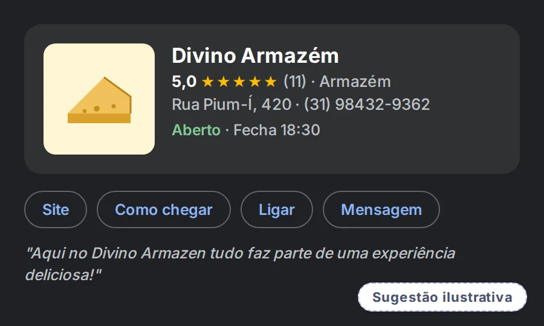
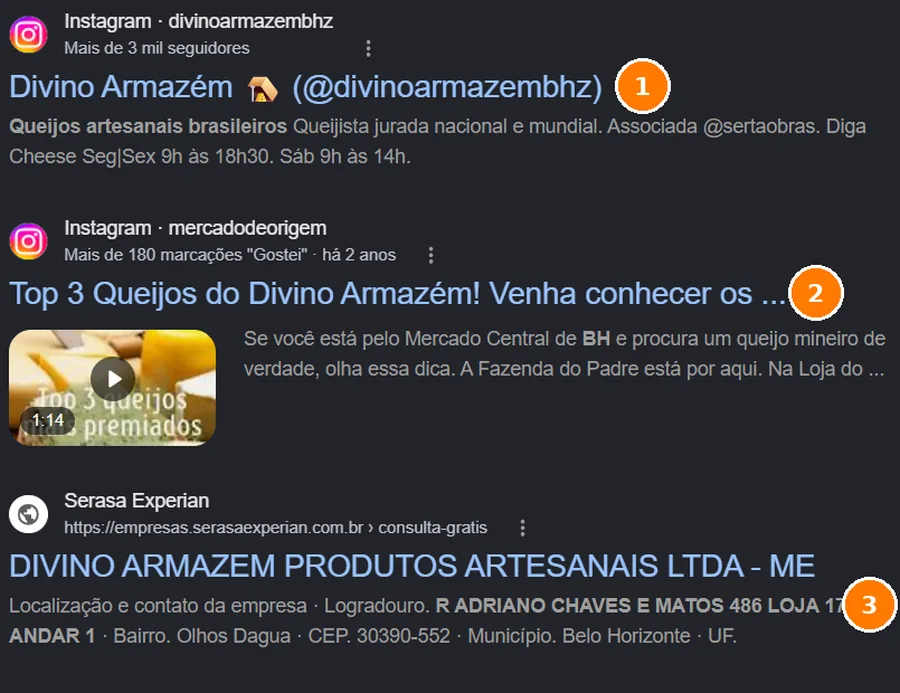
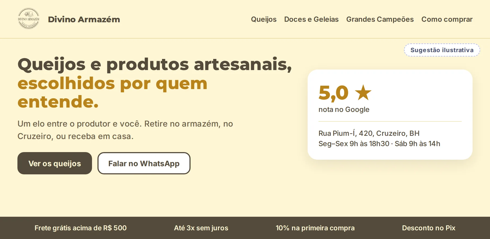

Leitura pública inicial
Olhamos, só por fora, o que o Divino Armazém mostra hoje ao mercado: Instagram, TikTok, Google e a loja virtual. Esta leitura reconhece o que já funciona e aponta possibilidades de evolução, para considerar conforme os objetivos de vocês.
Usamos o caminho do Método VOS: Ver com clareza, Ordenar o que existe e Sustentar com constância. Este é o recorte do Divino Armazém. Em cada etapa, mostramos o que já funciona e uma possibilidade de evolução.
A bio já traz queijista jurada, associação, endereço e link da loja. Possibilidade: levar a mesma frase central ao TikTok, ao Google e ao site, para quem chega por qualquer porta.
Fotos reais, eventos e prêmios no feed; categorias claras e boas condições na loja. Possibilidade: três pilares de conteúdo e um padrão simples para as artes de eventos.
Nota 5,0 no Google, queijos premiados e menção de terceiros. Possibilidade: reunir as avaliações em uma só ficha e levar essa prova também ao site.
Se um caminho já traz clientes, ele não precisa mudar. O Divino já tem produto, credencial, constância (755 publicações) e prova. O que segue são possibilidades, para usar quando fizerem sentido para os objetivos de vocês.
Leitura qualitativa, baseada apenas no que é público. O Raio-X completo mede isso com dados internos e entrevista. Ainda não conversamos, então esta é uma leitura de fora: só vocês sabem o que já traz resultado.
Antes de mudar qualquer coisa, vale proteger o que já gera confiança.
Duas fichas com 5,0 (7 e 4 avaliações), com telefone, horário e um comentário de cliente falando em "experiência deliciosa".
"Queijista jurada nacional e mundial" e associação à @sertaobras, com endereço e link da loja já no perfil.
Fotos de produto, bastidores, eventos e uma pessoa que aparece em vários posts. Autenticidade que não se compra.
Categorias por tipo de queijo, frete grátis acima de R$ 500, até 3x sem juros, Pix com desconto e cupom de primeira compra.
Um perfil de terceiros (@mercadodeorigem) publicou "Top 3 Queijos do Divino Armazém", com mais de 180 "Gostei".
Com 39 seguidores, os vídeos recentes que vimos têm de 152 a 655 visualizações. É uma amostra pequena, mas um bom sinal.
À esquerda, como está hoje (print real). À direita, uma possibilidade ilustrativa na própria identidade do Divino Armazém. É um exemplo de direção, não a arte final, e depende dos objetivos de vocês.
A bio já mostra o que é (queijos artesanais brasileiros), quem assina (queijista jurada) e onde fica. Dá para somar a cidade, o horário completo e o caminho de compra.


A grade mistura fotos de queijo, bastidores, eventos, prêmios e uma pessoa que aparece em vários posts. Isso passa autenticidade. Se o objetivo for ser reconhecido antes de ler o nome, um fio comum ajuda.


Com 39 seguidores, os vídeos recentes têm centenas de visualizações. Alguns trazem a marca do Instagram, sinal de que os Reels já são reaproveitados: um bom jeito de render mais sem criar do zero.


Há duas fichas no Google para o mesmo endereço. Se forem o mesmo negócio, reuni-las concentra as avaliações em um só lugar e evita dúvida sobre qual é a oficial.


Ao pesquisar o nome, aparecem o Instagram com a bio e o horário, um vídeo de terceiros elogiando os queijos e um cadastro de empresa. Vale conferir se tudo diz o mesmo.

Instagram aparece em primeiro, com a bio e o horário
Vídeo de terceiros "Top 3 Queijos do Divino Armazém"
O site é uma loja virtual com categorias claras e boas condições. Se o objetivo for aproximar quem compra de quem escolhe os queijos, a história, a queijista e o endereço podem ganhar espaço também lá.
Não vimos o site em tela cheia: as observações vêm do conteúdo em texto.

Consultamos site, Google, Instagram e TikTok. Registramos também o que não encontramos, porque ausência de prova também é informação.
| Item | O que encontramos | Fonte | Situação |
|---|---|---|---|
| Loja virtual | No ar, em plataforma Nuvemshop. Categorias por tipo de queijo, doces, bebidas e cafés; frete grátis acima de R$ 500; até 3x sem juros; cupom PRIMEIRACOMPRA; Pix com desconto; selos de site seguro. | divinoarmazembhz.com.br | Ativo |
| Duas fichas no mesmo endereço (Rua Pium-Í, 420): "Divino Armazém" (5,0 · 7 avaliações, com telefone) e "Divino Armazém Produtos Artesanais" (5,0 · 4 avaliações). Aberto, fecha às 18h30. | Print do Google (19/10/2026) | Possibilidade | |
| 755 posts, 3.059 seguidores. Bio com credencial, associação, endereço e link da loja. Destaques com eventos e queijos. | Print do Instagram | Ativo | |
| TikTok | 39 seguidores, 117 curtidas, 80 seguindo. Sem bio nem link visíveis. Vídeos recentes entre 152 e 655 visualizações, alguns com a marca do Instagram. | Print do TikTok | Possibilidade |
| Contatos | O WhatsApp do site (31) 98432-9362 é o mesmo telefone da ficha do Google. O site lista também (31) 99624-8723. | Site, Google | Ativo |
| Endereço e horário no site | O site informa apenas "Belo Horizonte - MG". Endereço e horário aparecem no Google e na bio do Instagram. | Site | Possibilidade |
| Depoimentos e avaliações no site | Não localizamos depoimentos em texto nem avaliações de produto na leitura da página. | Site | Possibilidade |
| Dados da empresa | O rodapé traz o número 49697267000179 (parece um CNPJ) sem formatação e sem razão social. Um diretório (Serasa Experian) lista "Divino Armazém Produtos Artesanais Ltda - ME" com outro endereço. | Site, Serasa Experian | Conferir |
| Itens que parecem rascunho | Categoria "Teste 3", item com "(cópia)" no nome e seis blocos de marcas com imagem genérica e sem nome. | Site | Conferir |
| Menção de terceiros | Vídeo "Top 3 Queijos do Divino Armazém" no Instagram de @mercadodeorigem, com mais de 180 "Gostei" (há cerca de 2 anos). | Google, Instagram | Ponto forte |
| Reclame Aqui e imprensa | Não localizamos página própria no Reclame Aqui nem matérias em veículos nas buscas feitas. | Buscas públicas | Não localizado |
No celular, deslize a tabela para o lado.
Se os caminhos de hoje já trazem clientes, eles seguem. Se o objetivo for ampliar com anúncios, estas três camadas ajudam cada real investido a render.
Um exemplo de sequência, a ajustar depois de conversarmos sobre os objetivos de vocês. O que já funciona entra como base e é preservado.
Esta leitura é um recorte do que o Raio-X mostra por dentro. Se fizer sentido, a gente conversa sobre os objetivos de vocês e sobre o que vale, ou não, mudar.
Conversar com a Yasmin Sem compromisso · resposta pelo WhatsApp